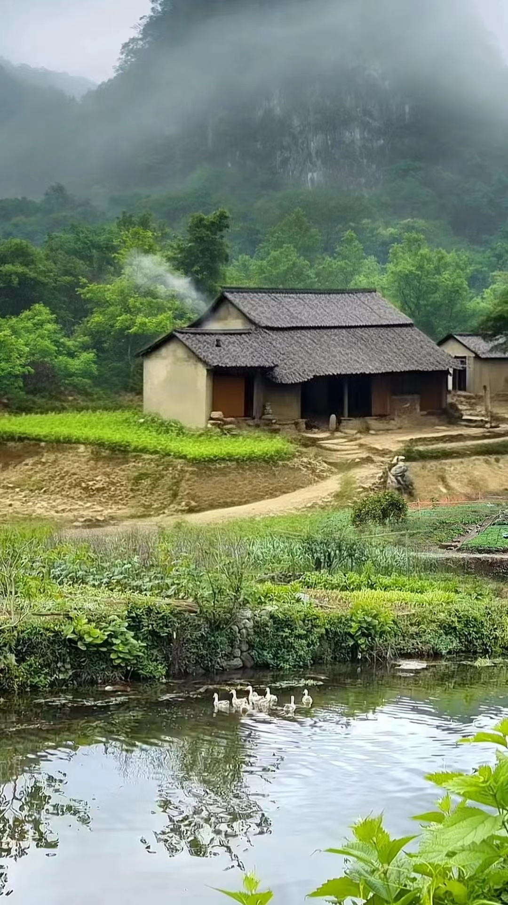

农村景色
房屋
傍晚

景色
农耕景象
水稻
种水稻

耕地
耕地
农村是一个相对于“城市”或“城镇”而言的地域概念，主要指的是从事农业生产为主的人聚居的地方。它是相对于城市的称谓，指农业区，有集镇、村落，以农业产业（自然经济和第一产业）为主，包括各种农场（包括畜牧和水产养殖场）、林场（林业生产区）、园艺和蔬菜生产等。农村与城市的区别主要在于经济活动的类型、人口密度、基础设施等方面。农村经济活动以农业为主，人口密度通常较低，基础设施相对较为简单，如交通、通讯、教育、医疗等可能不如城市发达。然而，随着现代化和城市化的发展，许多农村地区也在逐步改善其基础设施和经济发展水平。此外，农村也是许多文化、传统和习俗的发源地，拥有独特的自然风光和人文景观，对于保护和传承文化遗产、推动乡村旅游等方面具有重要意义。
早期农村的生活环境相对封闭和自给自足。村庄通常是由家族或血缘关系紧密的人群组成，农业生产是早期农村的核心活动。农民们依靠手工工具和简单的农具，如犁、耙、镰刀等，进行耕作、播种、收割等农业生产活动。他们根据季节的变化和气候的影响，合理安排农作物的种植和收割时间，以确保粮食的丰收。同时，农民们还会饲养家畜家禽，提供肉类和蛋类等食品，以满足家庭的需求。此外，早期农村的生活节奏相对较慢，人们的生活方式也较为简单。村民们通常过着日出而作、日落而息的生活，他们注重家庭和亲情，邻里之间也保持着紧密的联系。在农闲时节，村民们会组织各种庆祝活动，如庙会、舞龙舞狮等，以祈求来年的丰收和家人的平安。这些活动不仅丰富了村民的精神文化生活，也传承了中华民族的优秀传统文化。
菜园是指专门用于种植各种蔬菜的园地。它通常被划分为多个小区块，每个区块种植不同的蔬菜，如青菜、萝卜、番茄等。菜园不仅提供新鲜的食材，还为人们提供了接触自然、了解植物生长过程的乐趣。通过精心管理和维护，菜园能够持续产出优质的蔬菜，满足人们的饮食需求。
农田是农业生产的重要基础，指用于种植农作物并经常进行耕种、能够正常收获的土地。它承载着粮食安全和农业可持续发展的重任。农田经过合理规划和科学管理，能够有效提高农作物的产量和质量，满足人们日益增长的食品需求。同时，农田也是生态系统的重要组成部分，对维护生态平衡、保护生态环境具有重要意义
农村房屋通常具有独特的外观和风格，一般是挨家挨户各有一个院子，篱笆围起来井水不犯河水，它们往往采用传统的坡屋顶设计，墙体多为砖瓦或土坯材质，色调自然朴实。房屋周围可能环绕着菜地、果园和绿树，形成一幅宁静的田园风光。这些房屋不仅是农村居民的居住空间，更是乡村文化和传统的载体。
水稻
种水稻
耕地
耕地